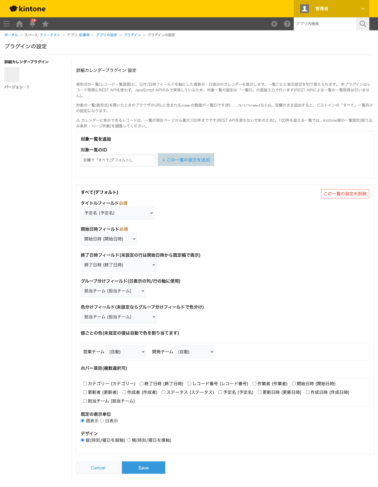
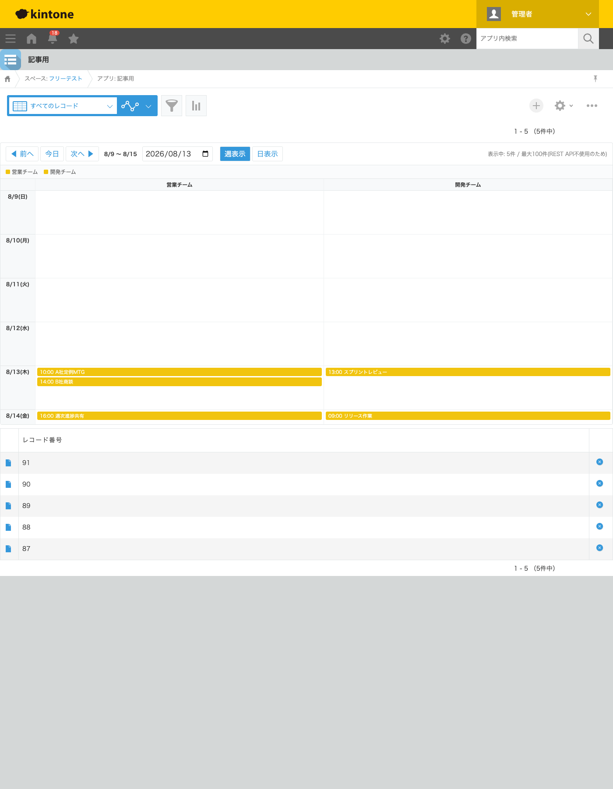
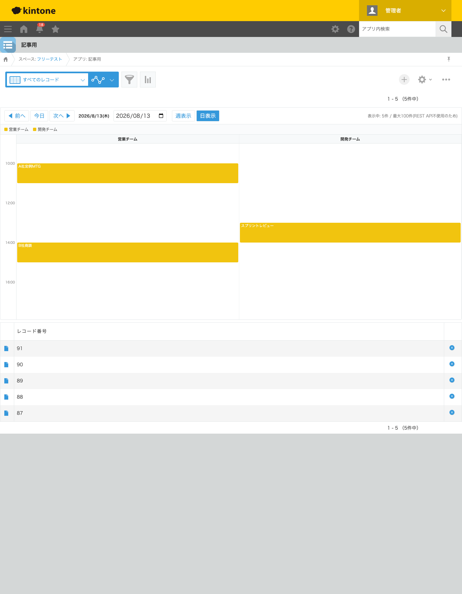

GovAppsプラグイン 安全性を確認できる無料kintoneプラグイン集
案件や商談の予定をkintoneのレコード一覧(表形式)で管理していると、「今週、誰がいつ何の予定を 抱えているか」を一目で把握しにくいことがあります。この記事では、無料プラグインで一覧画面に 週表示・日表示のカレンダーを追加し、担当チームごとに列分け・色分けして表示する方法を、実際の 設定画面と表示結果つきで解説します。
kintoneの一覧には標準でカレンダー形式がありますが、1レコード=1日の簡易的な表示で、開始・終了 時刻を軸にした週表示・日表示や、担当者ごとの列分けには対応していません。「今日の10時に誰の 予定が入っているか」を時間軸で見比べたい場合、標準のカレンダー形式だけでは力不足です。 JavaScriptカスタマイズを自作すれば時間軸のカレンダーを組めますが、週/日表示の切り替え・ グループ分け・色分け・凡例表示までを一から実装するのは簡単な作業ではありません。
「一覧を時間軸のカレンダーとして表示する」機能を用意する方法は、大きく4つあります。それぞれの 向き不向きをまとめました。
| 方法 | 向いている場合 | 注意点 |
|---|---|---|
| kintone標準のカレンダー形式のみ | 1日単位の予定確認で十分な場合 | 時間軸表示・担当者ごとの列分けはできない |
| JavaScriptを自作する | 社内に開発者がいて、独自の表示要件が多い場合 | 時間軸描画・グループ分け・色分けの実装・保守が必要 |
| 有料の他社プラグイン | 予算があり、ドラッグ&ドロップ編集など高機能を求める場合 | 月額課金が発生する。ソースコードが非公開で、外部通信の有無を利用者側で確認しにくいことが多い |
| GovAppsプラグイン(このプラグイン) | 無料で試したい、表示専用で十分、社内・庁内でセキュリティを確認してから導入したい場合 | 表示専用のためドラッグ&ドロップでの編集はできない |
GovAppsのプラグインはすべて無料・広告なしで、追加課金なしで使い続けられます。 ソースコードはGitHubで全公開しているオープンソースなので、 「本当に外部と通信していないか」「レコードの取得方法」を自治体・企業のセキュリティ担当者 自身の目で確認できます(このプラグインも個別ページにセキュリティレビュー結果を掲載しています)。
詳細カレンダープラグインは、タイトル・開始日時・終了日時・ グループ分けフィールドを指定するだけで、レコード一覧画面(表形式)の上にカレンダーを表示します。 今回は「予定名」「開始日時」「終了日時」(いずれも日時型)・「担当チーム」(ドロップダウン: 営業チーム/開発チーム)を持つアプリで設定しました。

アプリを更新してレコード一覧画面を開くと、表形式の一覧の上に週表示のカレンダーが表示されます。 担当チーム(営業チーム/開発チーム)ごとに列が分かれ、各予定が開始時刻付きのバーとして曜日の セルに並びます。カレンダー上部には色分けの凡例、ツールバーには「表示中: 5件 / 最大100件 (REST API不使用のため)」という上限の案内が常時表示されます。

ツールバーの「日表示」ボタンに切り替えると、その日の予定を0:00〜24:00の時間軸で確認できます。 グループ(担当チーム)ごとに列が分かれたまま、開始〜終了時刻に応じた高さのブロックとして 表示されます。

イベントブロックをクリックすると、そのレコードの詳細画面へ遷移します。「前へ/今日/次へ」ボタンや 日付の直接入力で、別の週・別の日へも簡単に移動できます。
view=の数値)を直接入力する方式です。一覧ごとに異なる設定を持たせることもできます。